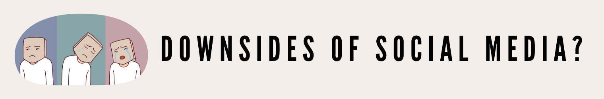

NM2207 Final Project
Curriculum
Data-story telling for my final project
About
This project aims to find stories in data through visualization via shiny, ggplot2 and other functions with Rstudio.
Background:
Analysis
Conclusion
Citations
https://backlinko.com/social-media-users#social-media-usage-stats https://www.kaggle.com/datasets/souvikahmed071/social-media-and-mental-health
Social Media Usage
From our Pie Chart in the first tab, it is evident that most of the respondents from our data set uses social media.
To further breakdown on our demographics, the Bar Chart in our second tab categorises our respondents and their social media usage tendency according to their ages. From the bars, a similar conclusion can be drawn: most of our respondents are in their 20s, and they do use social media.
Average time spent on social media daily
Next, we investigate the average time spent on social media daily. The graph indicates that the largest group of respondents spends more than 5 hours of their time on social media daily on average.
